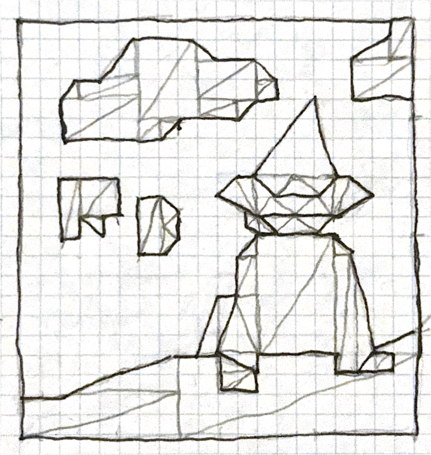

awesome thing: i made a line tool! you can click once to start drawing a line, and click somewhere else to finish drawing the line.
picture note: in the physical drawing, i accidentally made the top half one box too tall, which is why the clouds are a little squished, but everything else should match.